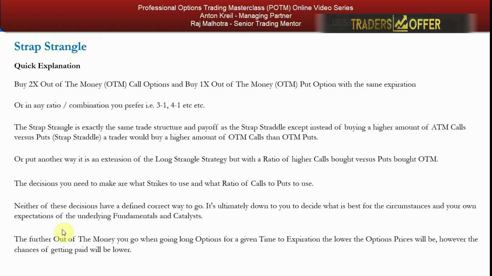
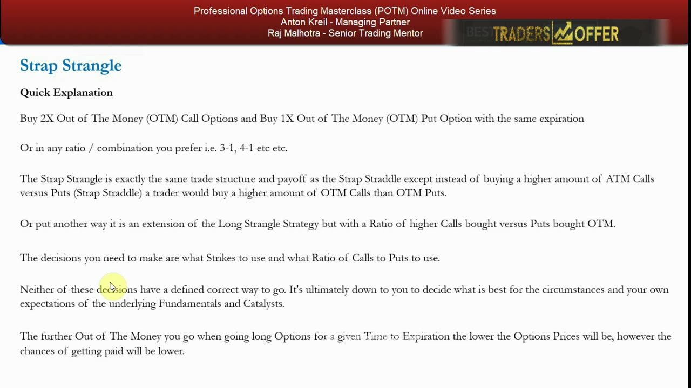
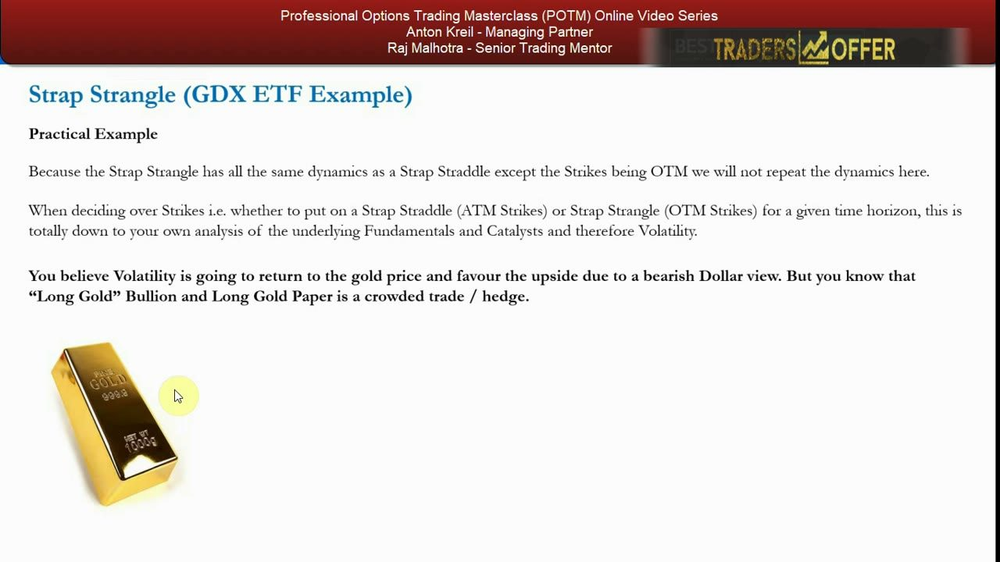
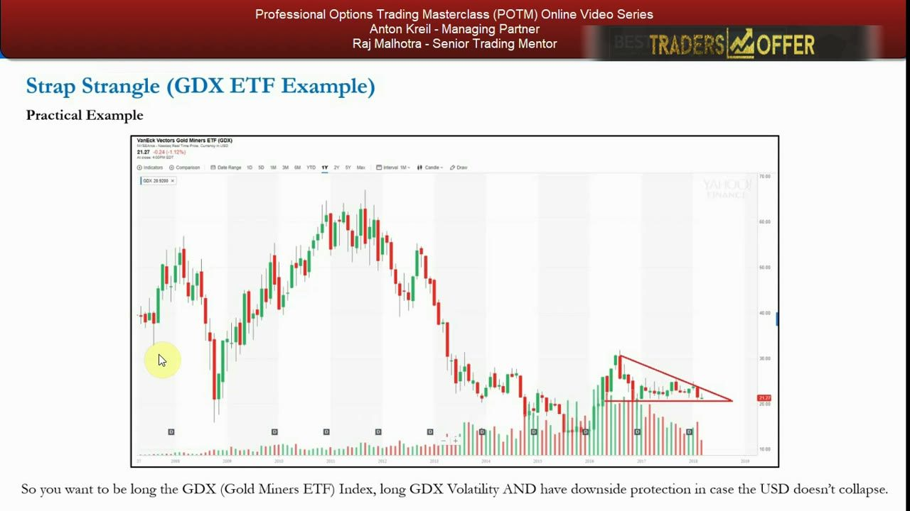
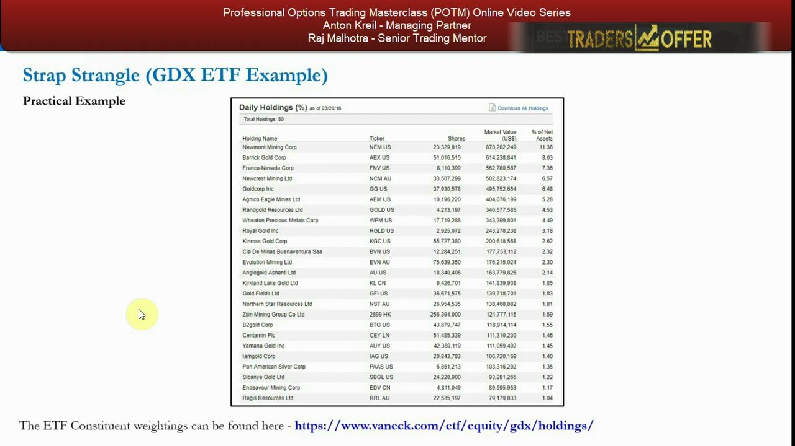
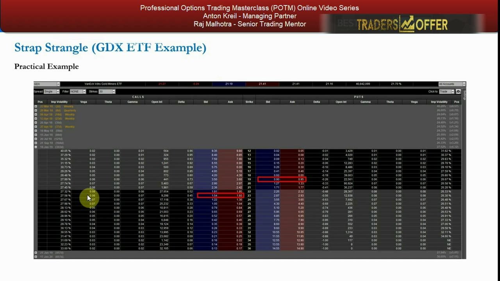
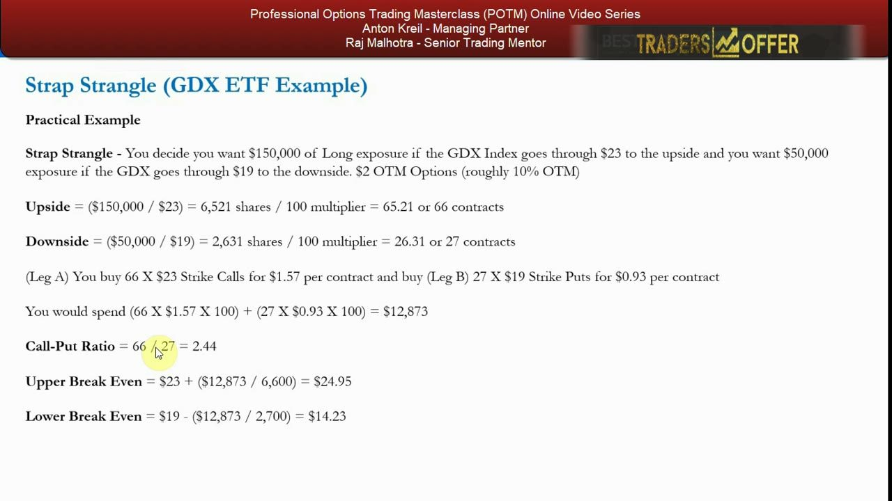
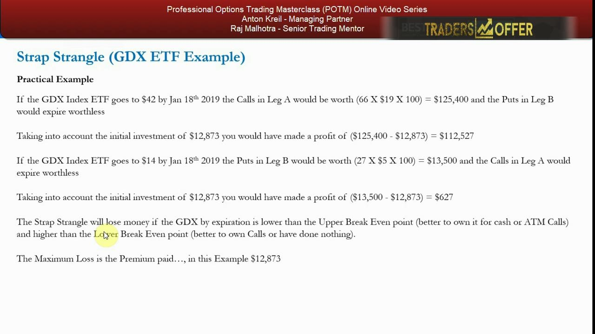
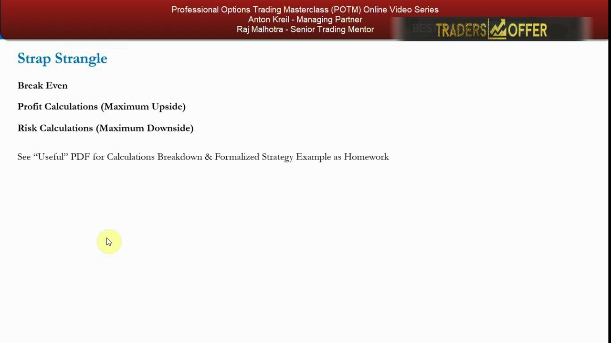

Strap Strangle — The Bullish OTM Volatility Bet
Two out-of-the-money calls to one out-of-the-money put: the strap straddle's cheaper, call-heavy cousin that needs a bigger move to pay.
The strap strangle is a bullish-skewed long-volatility trade — buy 2 OTM calls and 1 OTM put on the same expiry. It costs less than the strap straddle because the legs are out of the money, but it needs a larger move to break even. Anton rates it HIGH in usefulness: same payoff shape as the strap straddle, with a higher ROI on an explosive up-move.
The gist
- Structure: BUY 2× OTM calls (higher strike) + BUY 1× OTM put (lower strike), same expiry — 'strap' = call-heavy, 'strangle' = both legs OTM. Default 2:1, but any call-heavy ratio (3:1, 4:1, higher) works.
- It is 'exactly the same trade structure and payoff as the strap straddle except OTM' — or, an extension of the long strangle with more calls than puts.
- Bullish-skewed long volatility: net DEBIT, cheaper than a strap straddle (OTM legs), but needs a BIGGER move to pay; flat-bottom payoff, unlimited upside (2 calls), large finite downside (1 put).
- Max loss = total premium paid, taken in the ZONE between the two strikes; that premium acts as a built-in stop-loss.
- Breakevens spread the ENTIRE net debit over the shares of the one leg being valued: upper = call strike + total_debit / (call_contracts × 100); lower = put strike − total_debit / (put_contracts × 100).
- Legs are sized by DOLLAR exposure, so the contract ratio ≠ the exposure ratio — GDX example: 3:1 exposure ($150k / $50k) but 66/27 = 2.44 contract ratio.
- GDX worked example: spot $21.27, 18 Jan 2019 expiry (303 days), ~$23 calls / ~$19 puts (~10% OTM); Leg A 66× $23 calls @ $1.57, Leg B 27× $19 puts @ $0.93, total net debit $12,873; upper BE $24.95, lower BE $14.23.
- Outcomes: GDX → $42 = +$112,527; GDX → $14 = +$627; anywhere between the breakevens loses the $12,873 premium. Usefulness rated HIGH.
Directional volatility bet #3: back to the 'strap'
- Third of the directional volatility strategies; the 'strap' element means you favour the call side — a bullish directional bet that is also long volatility.
- Contrast with the strip (a downside play). A strip strangle, covered next, buys 1 call and 2 puts.
- The 'strangle' element differs from a straddle: all options are OUT of the money (straddles are at the money).
Every 'strap' trade tilts toward calls to express a bullish, long-vol view. The 'strangle' variant simply moves both legs out of the money to cheapen the trade.

What a strap strangle is
- BUY 2× OTM call options and BUY 1× OTM put option, same expiration.
- Any ratio/combination you prefer — 2:1, 3:1, 4:1 or higher — as long as it stays call-heavy.
- Same trade structure and payoff as the strap straddle, except you buy a higher amount of OTM calls than OTM puts (instead of ATM).
- Put another way: an extension of the long strangle strategy, but with more calls bought than puts, all OTM.
- Two decisions with no defined 'correct' answer — which strikes, and what call-to-put ratio — driven by your view on the underlying's fundamentals and catalysts.
The strap strangle is the OTM twin of the strap straddle: same bullish, long-vol DNA, just cheaper strikes. The strike and ratio choices are yours to fit the trade you want.

Cheaper strikes, but lower odds
- The further OTM you go for a given time to expiration, the lower the option prices — the trade gets cheaper.
- But the probability of getting paid falls: OTM options need more volatility (a bigger move) to finish in the money.
- So the strap strangle trades a lower cost for a requirement of a larger move — the core trade-off versus the ATM strap straddle.
OTM = cheaper premium but longer odds. You save money up front and accept that the underlying has to move further before you profit.

The parameters
- Directional and bullish, and implicitly long volatility.
- Simple to execute — only two transactions (buy the calls, buy the puts); a debit trade, relatively large versus other strategies because you pay for both sides.
- Maximum risk = total premium paid; maximum gain = unlimited (long calls, unlimited upside).
- Usefulness rated HIGH: same usefulness and payoff metrics as the strap straddle, with a potentially higher ROI on an explosive up-move.
Limited, defined risk and unlimited upside — the same favourable profile as the strap straddle, which is why Anton marks it HIGH in usefulness for the retail mandate.
Practical example: GDX and the gold thesis
- Example underlying: GDX, the US Gold Miners ETF; GDX spot $21.27.
- Thesis: volatility returns to gold and favours the upside on a bearish-dollar view (gold is inversely correlated with the USD and equities).
- But 'long gold bullion / long gold paper' is a crowded trade — so you want downside protection in case the dollar doesn't collapse.
- Goal: long GDX and long GDX volatility, plus a hedge if the support line breaks to the downside — a natural fit for a strap strangle as a portfolio hedge.
Gold as a bullish, long-vol bet with a built-in hedge: perfect for a call-heavy, both-legs-OTM structure. Being long GDX is implicitly an equity- and dollar-short hedge for a long portfolio.

The underlying: a market-cap-weighted miners ETF
- GDX is a market-cap-weighted ETF of large-cap US-listed gold miners (50 total holdings).
- Top weights: Newmont Mining 11.38%, Barrick Gold 8.03%, Franco-Nevada 7.36%, Newcrest 6.57%, Goldcorp 6.48%.
- Constituents run down to ~1%; weightings sourced from vaneck.com.
Knowing the ETF is a basket of large-cap miners grounds the trade — you're betting on a diversified gold-equity index, not a single name.

Picking the strikes off the chain
- Use the 18 Jan 2019 expiry — 303 days to expiry — for long-dated options that give the trade more time to be right.
- GDX trading at $21.27; explore the ~$23 call strike and the ~$19 put strike (each ~$2, roughly 10%, OTM).
- Quoted markets: 23-strike calls $1.54 / $1.60; 19-strike puts $0.90 / $0.95.
- Long-dated OTM cheapens the trade while keeping downside protection versus buying GDX for cash or ATM calls.
The long expiry buys time for the thesis to play out; going OTM on both legs lowers the premium so the same dollars buy calls plus a put hedge.

Sizing by dollar exposure
- Decide exposure first: $150,000 long if GDX breaks $23 up, $50,000 if GDX breaks $19 down — a 3:1 exposure ratio.
- Upside: $150,000 / $23 = 6,521 shares ÷ 100 = 65.21 → round up to 66 call contracts.
- Downside: $50,000 / $19 = 2,631 shares ÷ 100 = 26.31 → round up to 27 put contracts.
- Leg A: buy 66× $23-strike calls @ $1.57; Leg B: buy 27× $19-strike puts @ $0.93.
- Total net debit = (66 × $1.57 × 100) + (27 × $0.93 × 100) = $12,873 — this is the max loss (in the $19–$23 zone).
- Call-put contract ratio = 66 / 27 = 2.44 — the exposure ratio (3:1) is NOT the contract ratio.
Because legs are sized to a dollar exposure and then converted to contracts at each strike's price, the resulting contract ratio (2.44) differs from the exposure ratio (3:1).

Breakevens: spread the whole debit over one leg
- Upper breakeven = call strike + total premium / shares in Leg A = $23 + $12,873 / 6,600 = $24.95.
- Lower breakeven = put strike − total premium / shares in Leg B = $19 − $12,873 / 2,700 = $14.23.
- Note: the ENTIRE net debit is spread over the shares of the single leg being valued — it is NOT a simple strike ± premium.
- Flat-bottom payoff: any GDX close between $14.23 and $24.95 at expiry loses the full $12,873.
Each breakeven divides the total premium by the shares of just that leg, so the wide, cheaper OTM strikes still need GDX to clear $24.95 up or $14.23 down to profit.
Outcomes and the max-loss floor
- GDX → $42 by 18 Jan 2019: Leg A calls worth 66 × $19 × 100 = $125,400, puts expire worthless → profit $125,400 − $12,873 = $112,527.
- GDX → $14 by 18 Jan 2019: Leg B puts worth 27 × $5 × 100 = $13,500, calls expire worthless → profit $13,500 − $12,873 = $627.
- Loses money if GDX finishes below the upper breakeven and above the lower breakeven (better to have owned it for cash / ATM calls, or done nothing).
- Maximum loss = premium paid = $12,873, which acts as a built-in stop; you can also trade out of the legs early to claw back part of the premium if no big move materialises.
A dead-right explosive up-move pays a small fortune ($112,527); a dead-wrong crash still scrapes a small profit ($627); a quiet market between the breakevens costs the $12,873 premium — no more.

Summary and homework
- Break-even, maximum-upside profit and maximum-downside risk calculations are the same as the previous directional volatility trades.
- See the 'Useful' PDF for the full calculations breakdown and a formalized strategy example as homework.
- Next up: the final directional volatility bet (the strip strangle).
The strap strangle rounds out the bullish directional volatility toolkit; the mechanics carry straight over from the earlier straddle/strangle lessons.

Glossary
- Strap strangleA long-volatility, bullish-skewed trade: buy 2 OTM calls and 1 OTM put on the same expiry (any call-heavy ratio). Same payoff shape as a strap straddle but with OTM strikes.
- StrapThe call-heavy element — buying more calls than puts to express a bullish, long-volatility bias.
- StrangleThe out-of-the-money element — both the call and put legs are OTM (versus a straddle, which is at the money).
- OTM (out of the money)A call with strike above spot, or a put with strike below spot. Cheaper premium, but needs a larger move to pay off.
- Net debitThe total premium paid to open the position; for the strap strangle it is also the maximum loss.
- Upper breakevenCall strike + total premium / (call contracts × 100). GDX example: $23 + $12,873 / 6,600 = $24.95.
- Lower breakevenPut strike − total premium / (put contracts × 100). GDX example: $19 − $12,873 / 2,700 = $14.23.
- Exposure ratio vs contract ratioLegs are sized to a dollar exposure (e.g. 3:1, $150k/$50k), which converts to a different contract ratio at each strike's price (66/27 = 2.44).
- GDXVanEck Vectors Gold Miners ETF — a market-cap-weighted basket of ~50 large-cap gold-mining stocks, used here as the worked example (spot $21.27).
- Usefulness ratingAnton's retail-mandate score for the strategy. The strap strangle is rated HIGH — same usefulness and payoff as the strap straddle, with higher ROI on an explosive up-move.